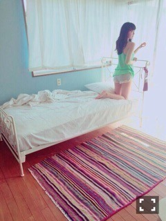
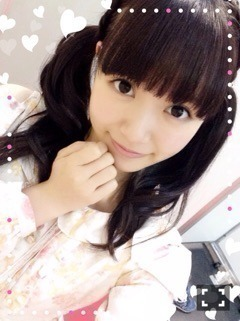
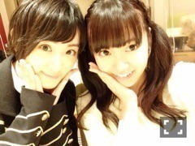
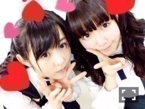

| 2015/04 09 Thu | ひめたん-OoO-その533 |
週刊ヤングマガジンオフショット


ヤンマガさん初登場！
いきなりソログラビアなんて
嬉しい( ´•̥ω•̥` )♡
いつものアイドルひめたんとは違う
ナチュラルな雰囲気で
撮っていただきました～＊
ひめたんのおとなっぽい
雰囲気が好きなひとは
喜んでくれるかな？
さらにTopYellさんは
単独ロングインタビューを
していただきました(´｡･v･｡｀)
こーゆーのずっと憧れだったんだぁ♡
今の私だからできる話、
今の私にしかできない話が
たくさん載っていると思います
そして、4/9は
ヤンジャン・UTB+発売日！
ヤンジャンはアンダーメンバー特集
W表紙、巻頭、センター、巻末グラビア
ジャックさせていただきました♡
UTB+はさゆとのペアグラビア
インタビューも読んでほしいな
新学期のスタート号にぴったりな
まっしろ衣装～＊
次回オフショット載せるね～
この週末もいろんなことがありました
まずは土曜日 名古屋アルバム個握！
1部 何度目の青空か？
2部 おいでシャンプー
3部 バレッタ
最後のアルバム握手会
最後はバレッタで締めたかった！
台湾帰りの私には(？)会場が寒くて
2部・3部ストール羽織ってたから
わかりづらかったかも(´・ω・｀)
てことで「透明な色」のイベントは
すべて終了したんだね！
遊びに来てくださったみなさん
ありがとうございました♪
この作品を通して得た新しい出会い
これからも大切にしていきたいです
今回いろーんなイベントがあったけど
どれが楽しかったかな？
この日はせいたんの
卒業セレモニーもありました
いろんなことを悩んで、
覚悟を決めてこの日を迎えたんだなって
思うとせいたんが眩しくて。
せいたん今まで本当にお疲れ様でした
卒業おめでとう！
お別れって、離れてから
ジワジワ寂しくなってくるんだよね
まだ実感がないよう( ´•̥ω•̥` )
日曜日は京都で個別握手会
11th個握スタートしましたね！
来てくださったみなさん
ありがとうございました～
名古屋から2日連ちゃんのひとも
結構いたー！お疲れさま！☆
1部 巻きおろし
2部 ひつじさんヘア
3部 編み込みツイン

写メのは2部・3部のお洋服。
乃木どこで渋谷デートしたやつだよ～
で、握手会が2日間あったけれど
久々の個握だったから
いろんなお話したな～
アンダーセンター、高校卒業、
ラジオ、台湾、じょしらく
たくさんおめでとう言ってもらった♡
雑誌や乃木どこや
乃木のの公開収録のお話も。
受験や就活終わったから
来たよ～なんてひともいたなぁ
お疲れさまでした(＊^ω^＊)
この春からスタートのひと
一緒にがんばろう！
さらに夜はらじらー！でした
初回ということで
めっちゃ緊張した(´,,•ω•,,｀)
おたよりがものすごい数来てたらしい！
これからもたくさん待ってるよ～
みなさん番組に参加して
一緒に楽しんでいきましょう☆
番組の公式ブログやTwitterは
放送中にスタジオの様子が
どんどんアップされるから
合わせてチェックしてみてね！
オリラジさんとは
生放送中にはじめましてでした！
お二人ともとっても優しくて
最初からたくさん
助けていただいてばかりで( ˇωˇ )
トークが軽快なので
ついつい聞き入ってしまいそうに
なっちゃう私も出演者の一人。
しっかりしなきゃ！
お二人のアシスタントMCとして
がんばります！
ゲストは生駒ちゃん♡

心強かったぁぁあ( ´•̥ω•̥` )
始まる前もスタジオのそばまで
お見送りに来てくれて
本当に応援団してくれたよー！
「目指せセンター！」のコーナーでは
ラジオセンターがある13階目指して
階段を駆け上がりました（°ω°）
1階からだよ（°ω°）
ラジオだからって信じてくれないかも
だけどほんとに1階からだもん（°ω°）
階段を駆け上がりながら
「命は美しい」を
歌いました（°ω°）い～のち～♪
応援団として藤森さんも一緒に
駆け上がってくださいました（°ω°）！
おたよりやTwitterで
応援コメントくださったみんなも
ありがとう♡♡
次回は何するのかな～
初回だいぶパンチ効いてたからな～
もう何来ても大丈夫な気するな～
声優アーツのコーナーは
内田真礼さんでした♡
私は真礼さん演じる
双葉ちゃんがとっても好きです♡
あのコーナーすてきすぎる！！
生駒ちゃんとふたりで
ラジオ聞きながら
きゃーきゃー言ってた♡
私も投稿したいくらい♡
次回のサンデーは
SKE48 松村香織さん、谷真理佳さん
ゲストは寿美菜子さんです
乃木坂は再来週の19日！
ひめはアンダーライブ千秋楽終わって
駆けつけるよ！
乃木坂からは誰が来てくれるかな～
そして乃木ののは
この前の公開収録の様子が
オンエアになりました！
まだのところがあるから
詳しくは言えないけれど
とりあえず私の役回りが
よくわからない感じだった(笑)
収録終わってかられなちさんが
なせか謝ってくれました(笑)
でも、嬉しい言葉も
たくさんかけてもらえて。
このメンバー好きだな、
このメンバーでアンダーライブも
最後まで駆け抜けていきたいなって
実感した収録でした( ˇωˇ )
公開収録は全員いなかったけれど
アンダーメンバー20人で
すてきなライブを作るぞ！！
お互いがお互いを補い合って
誰かが先を行くんでも
一歩引くんでもなく
みんなで一緒にがんばる。
それが私の理想です。
最後に、乃木どこ。
リニューアルした形で
新番組がスタートするという
サプライズでした
でもやっぱり寂しい( ´•̥ω•̥` )
私が7thで
選抜メンバーになった時にね
歌収録とか撮影とか、乃木どことか
最初みんなと比べたら
明らかに経験値が足りないから
大丈夫かなって緊張してたのね
だけど、ファンのみなさんが
握手会とかブログのコメントとかで
そのまんま、ひめの
やりたいようにやったらいいよ！
って言葉をたくさんもらって
変に飾らなくてもいいんだ
思いっきり失敗したらいいんだ！って
気が楽になったの＊
乃木どこは何をしても
受け入れてくれるあたたかい場所。
私は出演回数的には
そんなに多くはないんだけれど
それでも毎回収録が楽しみでした。
新しい番組になっても
かわらず私たちのホームで
あってほしいなぁ(´｡･v･｡｀)

あ、NOGIBINGO!4
スタートしました！
初回NOGIROOMみて♡(灬ºωº灬)

 今回は移動時間が
今回は移動時間が
長めであったと思うけれど
飛行機の中で何をしてた？
行きはひたすら寝てたかな
帰りはリハの動画見てた......
ああもう少しだあうぁぁあああああ
ひめたんは
あざといのとか口悪いのとか
正義とかうつらないの？
みんなのがうつされるどころか
びーむをうつしているよ( ´ ▽ ` )
最近はそうでもないのかな～寂しいな～
広島のおすすめ場所、
オススメグルメ教えて
今の時期は平和公園の桜が
キレイなはず！
もう散っちゃったかな？
毎年夜桜見に言ったな～
グルメは八天堂のクリームパン！
新学期だし何か
新しく始めたいこととか
あったりする～???
最近書いたばっかだけど
料理できるようになりたい！
それこそひめタンシチューでも。
難しいか。
今年は受験生なんだけど、
ひめたんが勉強の合間に
聴いていた曲ある？
ゆかりんさんのアルバムとか
アニソンがひめは好き(＊´v`＊)
あとはラジオなんかも好き！
ひめたん46
ちょっとまってねごめんね( >_< )
いつもたくさんのコメント
ありがとうございます
なんか、どうしても
日記長くなっちゃうのがなぁ
もっと簡潔にコンスタントに
書けたらいいのになあ～
最近はアンダーライブに向けて
バタバタとがんばっております！
なんか、最初
どうやっても文章が
真面目な感じで落ち着いてしまう
......歳かな、ふふふ。
(＊´・ω・＊)
コメント(951)
2015/04/09 00:18